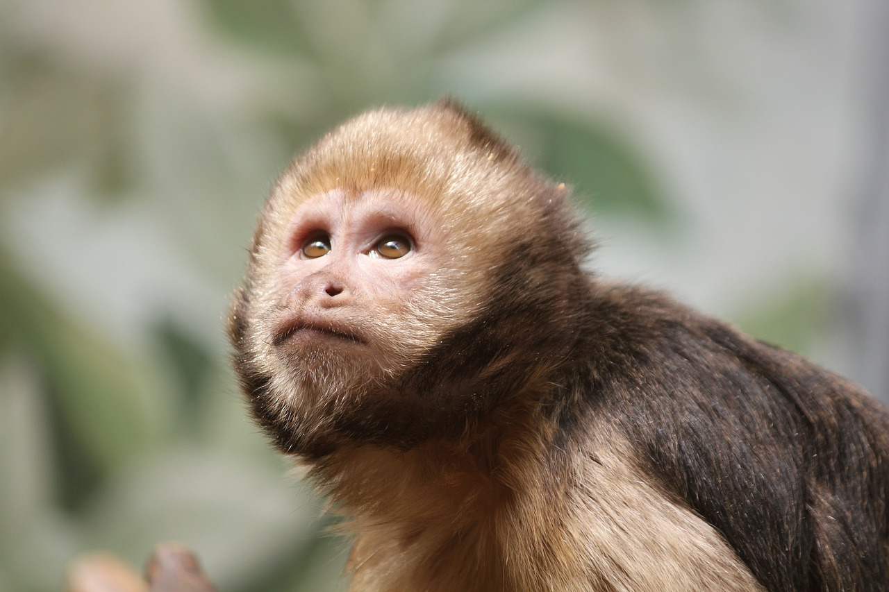

position:sticky;
Monkeys
True monkeys, anthropoids, monkeys, Anthropoidea, are a mammalian
suborder in the order primates. Real monkeys include so-called higher
primates; monkeys and monkeys with animal monkeys as well as apes and
humans, with about 150 species in six families.

Structure
A monkey usually has a round head, but in some the face is extended to
a snout. The face is usually hairless. The eyes are directed forward and
sit relatively close together, while the nose is greatly reduced. They can
thus fix one point with both eyes, have stereoscopic (three-dimensional)
vision and the yellow spot on the retina. Unlike most other vertebrates,
monkeys are thus "eye animals", but not "nose animals". The eye sockets are
separated from the temporal pit by a bone wall, and the cerebrum is remarkably
strongly developed. The skull is therefore also large.All monkeys have in each half of the
jaw two front teeth, a canine, two or three
molars and three molars. All cheek teeth are gnarled and have low crowns. The limbs,
arms, are usually longer than the body and legs. The forearm can be rotated so that
the thumb points towards the body (pronation) and from the body (supination), and the
hand and foot have five fingers and toes with flat nails.
Living
Some monkeys are omnivorous, but most species are herbivores. Some leafy species have
a highly specialized stomach - it is strikingly long and multi-chambered. The monkeys
live partly in monogamy, partly in polygamy, and the kid, who is completely helpless
in the first time, is cared for and cared for with the utmost care.
Monkeys often live together in large herds consisting of many families, with an old
male leading. They are almost exclusively tropical animals. They are predominantly
adapted to life in the trees, but many can also move with great ease on all fours
on the ground and then step on the entire palm and foot.
Systematics
The subordinate real monkeys are divided into three superfamilies:
Ceboidea, broad-leaved monkeys or western monkeys, with the families Capuchin
monkeys (Cebidae) and silk monkeys (Callitrichidae);
Cercopithecoidea, narrow monkeys, monkeys or monkeys, with the family Monkeys
(Cercopithecidae);
Hominoidea, humans and apes, with the families Gibbons (Hylobatidae) and great
apes (Hominidae).